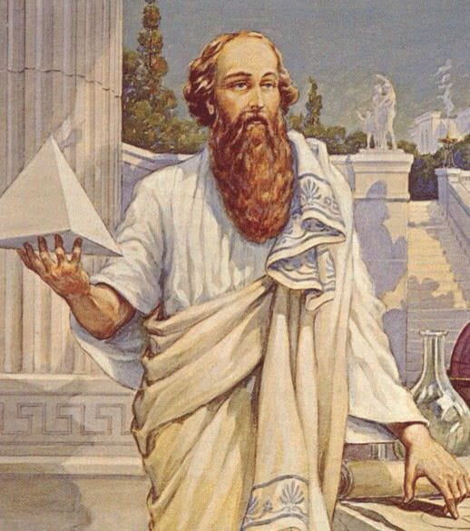
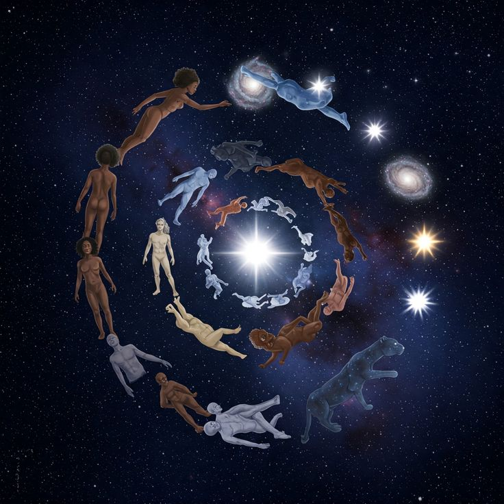

Who Was Pythagoras?
Pythagoras of Samos was an ancient Greek philosopher traditionally dated to approximately 570–490 BCE. He spent his early life on the island of Samos in the eastern Aegean and later emigrated to Croton, a Greek city in southern Italy, probably around 530 BCE. There he attracted followers who adopted a distinctive philosophical, religious, and disciplined way of life associated with his teachings and personal authority.
Pythagoras is one of the most famous figures in the history of ancient philosophy, mathematics, religion, and science. Yet the historical Pythagoras is unusually difficult to reconstruct. Unlike Plato or Aristotle, he left behind no surviving writings, and no detailed contemporary account of his philosophy exists. Much of the extensive literature about his life was written centuries after his death, when legend and historical memory had already become deeply intertwined.
His name is popularly associated with the Pythagorean theorem, but the ancient evidence suggests that his early reputation was connected at least as strongly with the fate of the soul, religious practices, discipline, and the distinctive way of life followed by his community. Later Pythagoreans made important contributions to mathematics, cosmology, and the study of number, but these achievements cannot always be assigned with certainty to Pythagoras himself rather than to the broader tradition that developed after him.
One of the ideas most securely associated with the early Pythagorean tradition is the importance of the soul and its possible transmigration after death. Pythagoras also became associated with rules governing diet, ritual, communal life, and personal conduct. His followers therefore appear to have regarded philosophy not merely as a collection of abstract theories but as a comprehensive way of life requiring intellectual, moral, and practical discipline.
For this reason, understanding Pythagoras requires distinguishing carefully between the historical Pythagoras, the early Pythagorean communities, and the many later traditions that developed around his name. Later writers often portrayed him as an almost superhuman source of Greek wisdom and attributed to him ideas that may belong to much later philosophers. The central historical challenge is therefore to determine what can reasonably be connected with Pythagoras himself and what belongs instead to the long and influential history of Pythagoreanism. :contentReference[oaicite:0]{index=0}
Pythagoras: Quick Facts
- Name — Pythagoras of Samos
- Born — c. 570 BCE
- Died — c. 490 BCE
- Birthplace — Samos, an island in the eastern Aegean
- Later center of activity — Croton, southern Italy
- Tradition — Pythagoreanism
- Period — Archaic Greek / Pre-Socratic philosophy
- Known for — Philosophy, the Pythagorean way of life, the transmigration of the soul, number, music, and mathematical traditions
- Writings — No writings by Pythagoras survive
- Famous mathematical association — The theorem now known as the Pythagorean theorem
- Important philosophical idea — The soul is immortal and can pass from one living body to another
- Associated later Pythagoreans — Philolaus and Archytas
Pythagoras and the World of Ancient Greece

Pythagoras lived during a period of major intellectual and cultural development in the Greek world. In Ionia, thinkers such as Thales of Miletus were associated with attempts to explain natural phenomena by identifying underlying principles rather than relying exclusively on traditional mythological narratives.
Pythagoras and the tradition associated with his name developed along a distinctive path. Pythagoreanism connected philosophical inquiry with religious practice, moral discipline, the fate of the soul, and numerical relationships. Philosophy was therefore not merely a subject for theoretical discussion but could involve an organized and demanding way of life.
This combination makes Pythagoras unusual among the early Greek thinkers. He became associated both with questions about the nature of reality and with a community whose members adopted distinctive rules, practices, and forms of discipline.
The historical evidence also requires caution. Some ideas now regarded as characteristically Pythagorean were developed more fully by later members of the tradition, so the intellectual world of Pythagoras himself cannot always be separated completely from the history of Pythagoreanism that followed him.
Life of Pythagoras
Pythagoras was traditionally associated with the island of Samos, near the western coast of Asia Minor. He is usually dated to approximately 570–490 BCE, but relatively little can be established with certainty about the details of his early life. Ancient sources provide differing accounts of his family, education, teachers, and travels.
Later traditions describe journeys to places such as Egypt, Phoenicia, and Babylonia. These accounts are difficult to verify and were often shaped by the later tendency to portray Pythagoras as a figure who had gathered the wisdom of many ancient civilizations. Possible contacts and travels should therefore be distinguished from firmly established historical facts.
Ancient tradition connects Pythagoras' departure from Samos with the tyranny of Polycrates. The historical evidence is limited, but it is generally accepted that Pythagoras later emigrated to southern Italy and became active at Croton, probably around 530 BCE.
Croton became the principal setting for Pythagoras' influence. There he attracted followers to a distinctive way of life involving discipline, communal association, religious concerns, and philosophical teaching, although the precise organization of the earliest community remains difficult to reconstruct.
Pythagoras in Croton and the Pythagorean Community
Croton, a prosperous Greek city in southern Italy, became the most important center of Pythagoras' activity. Ancient evidence indicates that he attracted a substantial group of followers who regarded his teachings as part of a distinctive and demanding way of life.
The Pythagorean community was not simply a mathematical school in the modern sense. Ancient and later sources associate Pythagorean life with religious observances, ethical discipline, rules governing conduct, and forms of communal association, although the precise practices of the earliest followers cannot always be established with certainty.
Pythagorean communities also became involved in the political life of Greek cities in southern Italy. Their influence and the reaction against them eventually became historically significant, but the precise political doctrines held by Pythagoras himself remain a matter of reconstruction and scholarly debate.
The combination of philosophy, religion, discipline, and community is therefore essential for understanding Pythagoras. Reducing him to the mathematical theorem that bears his name overlooks the evidence suggesting that his greatest early influence concerned a distinctive way of life and beliefs about the fate of the soul.
What Did Pythagoras Believe?
Reconstructing the philosophy of Pythagoras is difficult because no writings securely attributable to him survive. Our knowledge depends on fragments, references by other ancient authors, later biographical traditions, and evidence concerning Pythagorean thinkers who lived after him.
The earliest evidence most strongly associates Pythagoras with the fate and continued existence of the soul, including the doctrine of metempsychosis, or transmigration after death. His name also became closely connected with a disciplined way of life and practices concerned with religious and ethical self-formation.
Numerical relationships later became fundamental to Pythagorean philosophy, particularly in the work of thinkers such as Philolaus and other members of the tradition. However, historians are more cautious about attributing a fully developed mathematical or cosmological theory of number directly to Pythagoras himself.
For this reason, the safest approach is to distinguish between the historical Pythagoras and the broader philosophical tradition that developed under his name. Pythagoreanism preserved and transformed his legacy for centuries, making it difficult to determine exactly which later doctrines originated with the philosopher himself.
Pythagoras and the Immortality of the Soul

One of the ideas most securely associated with Pythagoras in the early evidence is the belief that the soul continues to exist after bodily death. Ancient writers repeatedly connect his reputation with knowledge concerning the fate of the soul, making this aspect of his thought especially important for understanding his historical influence.
Pythagoras is also strongly associated with the doctrine known as metempsychosis, or the transmigration of the soul. According to this belief, the soul can pass after death into another living body rather than ending permanently with the death of its present body.
This conception differed significantly from influential Greek ideas that portrayed the dead as existing only as diminished shades in the underworld. The possibility of further incarnations gave the soul a continuing history that extended beyond the limits of a single human life.
Ancient evidence also connects Pythagorean transmigration with the possibility that souls could inhabit both human and animal bodies. This idea encouraged a conception of kinship among living beings, although the exact ethical consequences that Pythagoras himself drew from the doctrine cannot always be established with certainty.
What Is Metempsychosis?
Metempsychosis is the philosophical and religious doctrine that the soul can pass from one body to another after death. In the tradition associated with Pythagoras, ancient evidence suggests that this process could involve movement between human and animal forms of life.
The doctrine challenged a sharp separation between human beings and other living creatures. If a soul could exist in different kinds of bodies over time, then the relationship between human and animal life could be understood in a way that differed from more conventional Greek assumptions.
Metempsychosis is often connected with the Pythagorean concern for purification, self-discipline, and the condition of the soul. However, historians must be careful not to assume that every later Pythagorean rule or practice can be directly explained by a doctrine personally formulated by Pythagoras.
Ancient sources disagree or remain silent about many details, including the precise mechanism and sequence of rebirths. We can be more confident that transmigration was central to Pythagoras' ancient reputation than we can about the complete system of reincarnation he may have taught.
The Pythagorean Way of Life
Pythagorean philosophy was closely connected with a disciplined way of life. The tradition associated philosophical inquiry with practices intended to shape conduct, develop self-control, and direct human life toward religious and intellectual ideals.
Self-Discipline
Ancient accounts portray Pythagorean communities as placing great importance on discipline and the regulation of daily conduct. Such practices formed part of a broader attempt to make philosophy a way of living rather than merely a collection of abstract theories.
Dietary Practices
Ancient and later sources associate Pythagoreanism with dietary restrictions and abstention from particular foods. Vegetarianism is frequently linked with the tradition, but the evidence does not permit complete certainty about precisely which dietary rules were followed by Pythagoras himself or by the earliest community.
Religious Practice
Religious observances and ideas of purification were important parts of the Pythagorean tradition. The philosophical life was thus closely connected with beliefs about the soul and its condition, although the exact relationship between particular rituals, rules of life, and Pythagoras' own teachings remains historically difficult to reconstruct.
Pythagoras, Numbers, and the Nature of Reality
Pythagoreanism became famous for assigning number and numerical relationships a fundamental role in understanding order and reality. The discovery of mathematical relationships in areas such as musical harmony helped make number and proportion especially important within the later Pythagorean tradition.
Aristotle reports that the Pythagoreans were deeply impressed by relationships between things and numbers and came to regard numerical principles as fundamental to their understanding of the cosmos. This evidence, however, concerns Pythagoreans as a group rather than providing a simple record of Pythagoras' personal doctrine.
The philosophical importance of number was therefore broader than the modern statement that "everything is made of numbers." Pythagorean thinkers explored how order, proportion, limit, harmony, and numerical relationships could help explain the intelligible structure of the world.
It is particularly important to distinguish the historical Pythagoras from later mathematical and cosmological Pythagoreanism. Thinkers such as Philolaus developed sophisticated theories about the structure of the cosmos generations after Pythagoras, and much of the detailed system known from ancient sources cannot confidently be assigned to the founder himself.
Pythagoras, Music, Number, and Harmony
Music played an important role in the development of Pythagorean thought because musical phenomena appeared to reveal a remarkable connection between sensory experience and mathematical order. The Pythagorean tradition became especially associated with the discovery that important musical consonances could be expressed through simple numerical ratios.
The octave, fifth, and fourth were associated with ratios such as 2:1, 3:2, and 4:3. These relationships suggested that sounds which human beings experience as harmonious might correspond to precise mathematical proportions. The connection became one of the clearest examples of the Pythagorean conviction that number could help reveal order within the world.
The philosophical importance of this discovery extended beyond music itself. If mathematical relationships could explain something as apparently qualitative and perceptual as musical harmony, then number, proportion, and ratio might also provide insight into broader patterns of order in nature and the cosmos.
This connection between number, proportion, and harmony became one of the most influential themes associated with Pythagoreanism. Later thinkers, including Philolaus and Archytas, developed Pythagorean approaches to mathematics, music, and the structure of the cosmos in increasingly sophisticated ways.
Stories describing Pythagoras himself as personally discovering these musical ratios, particularly the famous story involving a blacksmith's hammers, should nevertheless be treated cautiously. Much of the detailed evidence comes from later traditions, and historians cannot establish with confidence exactly which discoveries belonged to the historical Pythagoras himself.
Did Pythagoras Believe in the Harmony of the Spheres?
The famous expression "harmony of the spheres" describes the idea that the movements of the heavenly bodies are governed by mathematical relationships comparable to those found in musical harmony. In later philosophical traditions, the cosmos itself was imagined as a harmonious mathematical order.
Pythagorean thought strongly associated the cosmos with number, proportion, and harmony. Ancient evidence suggests that the Pythagorean tradition connected the movements of heavenly bodies with mathematical ratios related to musical consonance, helping to establish the broader idea of a mathematically ordered universe.
It is uncertain, however, whether the historical Pythagoras himself formulated the doctrine in the detailed form in which it later became famous. The familiar image of planets moving through literal musical spheres reflects developments within later Pythagorean, Platonic, and other philosophical traditions.
The lasting importance of the idea lies in its central philosophical insight: the universe might possess an intelligible order expressible through mathematical relationships. This Pythagorean vision of cosmic harmony influenced ancient astronomy, Platonism, Renaissance thought, and later attempts to understand nature mathematically.
Pythagoras and Mathematics
Pythagoras is probably most famous today for mathematics. His name is permanently attached to the Pythagorean theorem, one of the fundamental results of geometry, and the wider Pythagorean tradition played an important role in connecting mathematical inquiry with philosophical questions about reality and order.
Yet the historical picture is more complicated than the popular story suggests. Mathematical knowledge concerning particular right-angled triangles existed in ancient civilizations before the lifetime of Pythagoras, including in Mesopotamian mathematics. The history of the theorem therefore extends beyond any single Greek philosopher.
There is also no surviving work by Pythagoras demonstrating that he discovered or proved the theorem himself. Because Pythagoras wrote nothing that survives and later Pythagorean traditions frequently attributed discoveries to their founder, it is difficult to separate his own possible contributions from those of later members of the school.
What is historically clearer is that the Pythagorean tradition gave mathematics an unusual philosophical significance. Numbers, geometrical figures, ratios, and proportions were not treated merely as practical tools but as possible keys to understanding the structure and intelligibility of the world.
The Pythagorean Theorem
The theorem states that in a right-angled triangle, the square of the hypotenuse—the side opposite the right angle—is equal to the sum of the squares of the other two sides. If the shorter sides are represented by a and b, and the hypotenuse by c, the relationship can be expressed mathematically as follows:
a² + b² = c²
The mathematical relationship was known and used in various forms before Pythagoras, while later Greek tradition connected it strongly with Pythagoras and the Pythagoreans. Whether Pythagoras himself supplied the first rigorous proof remains uncertain, and the surviving historical evidence does not allow the question to be settled with confidence.
Did Pythagoras Discover the Pythagorean Theorem?
We cannot establish with certainty that Pythagoras himself discovered or proved the theorem that bears his name. The historical evidence for his personal mathematical work is limited, and no surviving writing by Pythagoras records such a discovery.
Mathematical evidence from ancient Mesopotamia shows that relationships involving right-angled triangles and what are now called Pythagorean triples were known long before Pythagoras lived. This demonstrates that the numerical relationship itself did not originate entirely with the Greek philosopher or his immediate followers.
The more difficult historical question concerns the development of a general theorem and a deductive proof. Later Greek mathematical tradition gave Pythagoras and the Pythagoreans an important place in this history, and some ancient sources explicitly attributed the discovery of the theorem to Pythagoras.
However, these attributions were written centuries after his lifetime, and historians cannot identify a particular original proof that can be securely assigned to Pythagoras himself. It remains possible that early Pythagoreans contributed significantly to the theorem's development, but the precise nature of that contribution is unknown.
The safest historical statement is that the theorem is strongly associated with Pythagoras and the Pythagorean mathematical tradition. His personal role in discovering the relationship or producing a proof, however, remains one of the many important questions about his historical legacy that cannot be answered with complete certainty.
What Mathematics Is Associated with Pythagoreanism?
The Pythagorean tradition became associated with important developments in mathematics, especially the study of numerical relationships, geometry, proportion, and the mathematical structure of musical harmony. Although individual discoveries cannot always be assigned to a particular philosopher, the Pythagoreans helped establish mathematics as a central part of philosophical inquiry.
Geometry
Pythagorean mathematics is closely associated with geometric reasoning and with the attempt to understand figures through precise mathematical relationships. The study of triangles, polygons, areas, proportions, and regular geometrical forms became important within the broader mathematical tradition connected with the Pythagoreans.
Numbers and Proportion
Pythagorean thinkers investigated the properties and relationships of numbers and regarded numerical proportion as philosophically significant. Numbers could be represented through geometrical patterns, while ratios helped explain relationships in mathematics, music, and, for later thinkers, the structure of the cosmos itself.
Irrational Quantities
The recognition that some geometrical magnitudes cannot be expressed as ratios of whole numbers or whole-number proportions became a major development in Greek mathematics. Later tradition strongly associates this discovery with the Pythagoreans, although the surviving evidence does not allow the discovery to be securely attributed to Pythagoras personally.
Mathematics as a Way of Understanding Order
The deeper importance of Pythagorean mathematics was philosophical. Mathematical relationships appeared to reveal patterns of order, proportion, limit, and structure within the world. This conviction that nature possesses an intelligible mathematical order became one of the most enduring contributions of the Pythagorean tradition to the history of philosophy and science.
Pythagorean Symbols, Rules, and Secrecy
Ancient accounts describe the Pythagorean community as having rules, symbols, sayings, and practices that helped define its distinctive way of life. Some of these teachings were transmitted orally and were expressed through short precepts known as akousmata, or "things heard," whose meaning could be moral, religious, practical, or symbolic.
Ancient traditions preserve rules concerning food, conduct, religious observances, friendship, silence, and personal discipline. Some sayings appear straightforward, while others are highly enigmatic and may have required interpretation within the community. Because much of the surviving evidence comes from later authors, however, it is often difficult to determine which rules genuinely belonged to the earliest Pythagorean tradition.
The famous story that Pythagoreans were forbidden to eat beans is an example of a tradition closely connected with Pythagoras. Ancient authors offered different explanations for the supposed prohibition, ranging from religious symbolism to practical considerations. The conflicting evidence does not allow historians to state with confidence exactly what Pythagoras himself taught about beans.
There is evidence that some teachings within the Pythagorean community were kept from outsiders. Silence and discretion could themselves form part of the community's discipline, and ancient writers sometimes describe particular doctrines or symbols as secret. This does not mean, however, that all Pythagorean philosophy was hidden from the public.
The combination of oral teaching, selective secrecy, and the later development of the tradition created a major historical problem. Later generations could not always determine whether a particular doctrine originated with Pythagoras, with an early community, or with Pythagoreans who lived generations after the founder.
Pythagoras, Religion, and Philosophy
Pythagoreanism cannot be understood solely as a theory about mathematics or nature. The Pythagorean way of life brought philosophical inquiry into close relationship with religious practice, ethical discipline, and concerns about the condition and destiny of the human soul.
The purification of the soul, religious observance, self-control, and beliefs concerning life after death were central themes associated with Pythagoras and the early tradition connected with his name. The doctrine of the transmigration of the soul gave particular importance to the way a person lived and to practices intended to cultivate a disciplined life.
It is important, however, not to describe Pythagoreanism simply as a separate religion with a completely independent system of worship. Pythagoras appears instead to have taught a distinctive way of life that emphasized particular forms of ritual, purification, and discipline within the broader religious world of ancient Greece.
This makes Pythagoras different from the modern image of a philosopher working only through abstract argument. For Pythagoras and many of his followers, philosophical understanding was connected with the transformation of the person who pursued it. Knowledge, discipline, character, and the care of the soul belonged to a single way of life.
His tradition therefore occupies an important place between philosophy, religion, ethics, and mathematics in the intellectual history of ancient Greece. This combination of rational inquiry and disciplined living remained one of the most distinctive and influential features of the Pythagorean legacy.
Pythagoras' Influence on Plato and Greek Philosophy
Pythagorean ideas became important within the broader development of later Greek philosophy. The Pythagorean emphasis on mathematical order, proportion, harmony, the soul, and the intelligibility of the cosmos provided themes that later philosophers could adopt, transform, and develop in very different directions.
Plato was aware of Pythagoreans and engaged with ideas associated with the Pythagorean tradition, particularly in questions concerning number, proportion, harmony, and the structure of reality. The precise extent of Pythagorean influence on Plato, however, remains debated among modern scholars.
It would therefore be misleading to describe Plato simply as a Pythagorean philosopher. His Theory of Forms, political philosophy, epistemology, and many other central aspects of his thought cannot be reduced to Pythagorean sources. Nevertheless, some later Pythagorean ideas appear to have influenced particular aspects of his philosophy, especially his later thinking about mathematical order and first principles.
Later Pythagoreans, especially Philolaus and Archytas, developed mathematical, cosmological, and philosophical ideas in much greater detail than can be securely attributed to Pythagoras himself. Their work provides important evidence for understanding the intellectual tradition that later Greek philosophers encountered under the name of Pythagoreanism.
Pythagoreanism therefore became one of the important intellectual traditions contributing to later Greek philosophy. Its influence can be seen most clearly in continuing discussions of mathematics, proportion, harmony, the soul, cosmic order, and the possibility that reality possesses an intelligible structure accessible to human reason.
What Is Pythagoreanism?
Pythagoreanism refers both to the philosophical and religious way of life historically associated with Pythagoras and to the wider intellectual traditions developed by people identified as Pythagoreans after his lifetime. The term therefore covers a long and historically diverse movement rather than a single unchanging system of doctrine.
This distinction is essential. Pythagorean communities and thinkers continued for generations after Pythagoras' death, and later philosophers developed mathematical, cosmological, metaphysical, and ethical theories that are collectively described as Pythagorean. These later developments cannot automatically be treated as the personal teachings of the historical Pythagoras.
Consequently, statements such as "Pythagoras believed that everything is number" can be misleading when presented without qualification. Aristotle's detailed discussions often concern Pythagoreans as a group, particularly thinkers active generations after Pythagoras, while the surviving evidence for the founder's own philosophical doctrines is much more limited.
Pythagoreanism also changed over time. Early communities emphasized a distinctive way of life and teachings concerning the soul, while later thinkers developed increasingly sophisticated accounts of mathematics, harmony, cosmology, and the fundamental principles of reality. Still later traditions sometimes attributed ideas to Pythagoras that had developed long after his death.
The history of Pythagoreanism is therefore also a lesson in historical interpretation. To understand the tradition accurately, historians must distinguish between Pythagoras himself, the earliest Pythagorean communities, the philosophers of the fifth and fourth centuries BCE, and the much later traditions that transformed Pythagoras into an almost legendary source of ancient wisdom.
Important Pythagorean Thinkers
- Pythagoras — Founder and central figure of the tradition.
- Philolaus — An important fifth-century Pythagorean associated with mathematical and cosmological theories.
- Archytas — A later Pythagorean philosopher, mathematician, and political figure.
Did Pythagoras Write Any Books?
No surviving writings by Pythagoras are known. Indeed, the available ancient evidence strongly suggests that Pythagoras did not leave behind written philosophical works of the kind associated with later Greek philosophers such as Plato or Aristotle.
This is one of the most important facts to understand when studying his philosophy. There is no surviving book, treatise, or philosophical dialogue that can be read as Pythagoras' own presentation of his ideas, and no detailed contemporary account records his teachings in the way Plato and Xenophon recorded aspects of Socratic philosophy.
Later authors sometimes attributed writings to Pythagoras, but scholars have identified a number of these texts as pseudo-Pythagorean works—that is, writings composed later under the authority of Pythagoras' name. Such texts often reflect philosophical ideas that developed centuries after his lifetime and cannot simply be treated as evidence for the beliefs of the historical Pythagoras.
This later literary tradition helped create an image of Pythagoras as the original source of an enormous range of Greek philosophical discoveries. For historians, however, the existence of writings falsely attributed to him makes the reconstruction of his thought even more difficult and requires particular caution when evaluating later claims about his doctrines.
Because of this, historians reconstruct Pythagoras by comparing the earliest available evidence with later reports rather than by reading a surviving work written by him. The central historical task is to distinguish what can reasonably be connected with Pythagoras himself from ideas developed by later Pythagorean communities.
How Do We Know About Pythagoras?
Our knowledge of Pythagoras comes from a complicated collection of ancient testimonies written at very different periods. Some relatively early evidence comes from references by Greek philosophers and their successors, while the fullest surviving biographies were composed many centuries after Pythagoras' lifetime.
Herodotus, Plato, and Aristotle provide important evidence for the broader intellectual world surrounding Pythagoras and the Pythagoreans, although none provides a complete biography of Pythagoras. Aristotle is particularly important for the study of later early Pythagorean ideas, but his surviving discussions often concern the Pythagoreans as a group rather than securely identifiable doctrines of Pythagoras himself.
Important evidence also survives indirectly through writers associated with Aristotle's school, including Aristoxenus and Dicaearchus, whose works are now largely lost. Later authors such as Diogenes Laertius, Porphyry, and Iamblichus preserve much more extensive accounts of Pythagorean life and traditions, but they wrote several centuries after the period they describe.
The problem is that these sources were written at different times and do not always agree. Some later biographies also portray Pythagoras as a miraculous or semi-divine figure and reflect philosophical traditions that sought to make him the original source of later Greek wisdom. Their accounts may preserve earlier material, but they cannot be accepted uncritically as straightforward historical biography.
Historical study therefore requires separating relatively early evidence from later legendary material and asking whether a particular claim can be independently supported. This difficulty is often called the Pythagorean question: how can historians identify the historical Pythagoras when his own writings are absent and the later tradition is so extensive?
What Do We Actually Know About Pythagoras?
Pythagoras is an excellent example of the difficulty of studying ancient philosophers. His influence was enormous, but the evidence about his personal philosophy is limited, indirect, and sometimes contradictory. The historical Pythagoras must therefore be carefully distinguished from the much larger tradition that later developed under his name.
Relatively Well-Attested
- Pythagoras was associated with Samos.
- He later moved to Croton in southern Italy.
- He established a community of followers with a distinctive way of life.
- He was associated with beliefs concerning the immortality and transmigration of the soul.
- He became a highly influential figure in the development of the Pythagorean tradition.
Traditionally Attributed
- The discovery or proof of the Pythagorean theorem.
- Numerous mathematical discoveries.
- Detailed theories concerning cosmic harmony.
- Extensive travels and learning from Egypt and the Near East.
Uncertain or Disputed
- The exact mathematical achievements of Pythagoras himself.
- The precise form of his cosmological ideas.
- The exact rules followed by his original community.
- Whether many later Pythagorean doctrines can be traced directly to Pythagoras.
- The precise circumstances of his death.
How Did Pythagoras Die?
The circumstances of Pythagoras' death are uncertain. Ancient sources preserve several different accounts, which disagree about the events that led to his death and include details that are difficult to separate from the legendary traditions surrounding his life.
One relatively important historical tradition connects political violence and attacks on the Pythagorean community at Croton with Pythagoras' departure from the city. Evidence associated with Aristoxenus and Dicaearchus suggests that violence directed against the Pythagoreans may have forced him to leave Croton and that he subsequently went to Metapontum in southern Italy.
Later sources give different explanations for his death, including stories involving conflict, starvation, and the famous story of a bean field. These accounts should not be treated as equally reliable historical facts, particularly because many of them appear in sources written long after Pythagoras' lifetime.
The safest conclusion is that Pythagoras died around 490 BCE, probably at Metapontum, while the exact circumstances remain disputed. Beyond this broad outline, the surviving evidence does not allow historians to reconstruct his final days with confidence.
Why Is Pythagoras Important in Philosophy?
Pythagoras is important because he became the central figure of a distinctive philosophical tradition in which philosophy, mathematics, religion, ethics, and the soul were closely connected. The Pythagorean way of life treated intellectual inquiry not merely as the study of abstract theories but as something connected with the transformation and discipline of the person.
Earlier Greek natural philosophers had focused heavily on questions about the fundamental nature of the physical world. Pythagorean traditions developed a different and highly influential emphasis: the possibility that mathematical relationships, proportion, moral order, and the purification of the soul were connected to a deeper structure of reality.
His importance also lies in the extraordinary influence of the movement that developed under his name. Later Pythagorean thinkers explored questions about number, harmony, astronomy, geometry, and the structure of the cosmos, helping establish mathematics as an important part of philosophical reflection about reality.
His influence was therefore not limited to mathematics. Pythagorean thought contributed themes that became important in later discussions of metaphysics, cosmology, ethics, mathematics, music, and the philosophy of the soul. These themes interacted in significant ways with later Greek philosophy, particularly with Platonic traditions.
Pythagoras is consequently important not because every famous doctrine associated with his name can be securely attributed to him personally, but because the tradition he inspired became one of the major intellectual forces in the development of ancient philosophy.
Pythagoras Explained Simply
Pythagoras was an ancient Greek philosopher who became the central figure of a distinctive community in southern Italy. The tradition associated with him connected the disciplined life of the individual with ideas about the soul, religion, number, harmony, and the order of the cosmos.
He is famous today mainly because of the Pythagorean theorem, but his historical importance goes far beyond geometry. The evidence does not allow us to establish that he personally discovered or proved the theorem, whereas his broader influence on the development of the Pythagorean tradition is unmistakable.
Because Pythagoras left no securely authentic philosophical writings, historians must distinguish carefully between the historical philosopher and the ideas developed by later generations of Pythagoreans. Much of what is popularly described as Pythagoras' personal philosophy belongs more securely to the tradition that continued after his death.
- Who? — Pythagoras of Samos.
- When? — Approximately 570–490 BCE.
- Where? — Born on Samos; later active mainly at Croton in southern Italy.
- Philosophical tradition? — Pythagoreanism.
- Central religious idea? — The soul is immortal and can pass from one body to another.
- Central intellectual theme? — Number, proportion, order, and harmony.
- Famous mathematical association? — The Pythagorean theorem.
- Did he write books? — No surviving writings by Pythagoras are known.
- Why is he important? — He helped create a philosophical tradition linking mathematics, the soul, ethics, religion, and the structure of reality.
A Famous Saying Attributed to Pythagoras
“All things are number.”
Frequently Asked Questions About Pythagoras
Who was Pythagoras?
Pythagoras of Samos was an ancient Greek philosopher traditionally dated to approximately 570–490 BCE. He later established a philosophical and religious community at Croton in southern Italy.
What is Pythagoras famous for?
Pythagoras is famous today for the Pythagorean theorem, but historically he was also known for his teachings concerning the soul, religious practices, disciplined living, and the Pythagorean community.
What did Pythagoras believe?
Pythagoras is strongly associated with the immortality and transmigration of the soul, religious purification, disciplined living, and a philosophical tradition that gave importance to number and harmony.
What is Pythagoreanism?
Pythagoreanism is the philosophical and religious tradition associated with Pythagoras and the later thinkers who followed his teachings. Because the tradition continued for centuries, not every Pythagorean doctrine can be attributed directly to Pythagoras.
Did Pythagoras believe in reincarnation?
Pythagoras is traditionally associated with metempsychosis, the belief that the soul survives death and can pass into another living body. This is one of the ideas most strongly connected with the early Pythagorean tradition.
What is metempsychosis?
Metempsychosis is the transmigration of the soul after death from one living body to another. In Pythagorean tradition, the process could include movement between human and animal forms.
Did Pythagoras discover the Pythagorean theorem?
It cannot be established that Pythagoras personally discovered or proved the theorem. The mathematical relationship was known in ancient Babylonian mathematics before his lifetime. The theorem became strongly associated with Pythagoras and the Pythagorean mathematical tradition.
What is the Pythagorean theorem?
The Pythagorean theorem states that in a right-angled triangle, a² + b² = c², where c is the hypotenuse and a and b are the other two sides.
Did Pythagoras write any books?
No surviving writings by Pythagoras are known. Later works were sometimes attributed to him, but many such texts are regarded as later pseudo-Pythagorean writings.
Did Pythagoras believe that everything was made of numbers?
Pythagoreanism became strongly associated with the idea that numbers and numerical relationships are fundamental to reality. However, the detailed doctrine is primarily known from later Pythagorean thinkers, so it should not automatically be presented as a complete theory personally developed by Pythagoras.
Did Pythagoras believe in the harmony of the spheres?
Pythagorean traditions connected the cosmos with mathematical ratios and harmony. The familiar detailed doctrine known as the "harmony of the spheres" developed through later Pythagorean and Platonic traditions and cannot simply be treated as a surviving statement written by Pythagoras.
Where did Pythagoras live?
Pythagoras was born on Samos and later moved to Croton in southern Italy, where he established his influential community. He is also traditionally associated with Metapontum toward the end of his life.
Who were the Pythagoreans?
The Pythagoreans were followers of Pythagoras and members of the broader philosophical tradition that developed around him. Later Pythagoreans included thinkers such as Philolaus and Archytas.
Did Pythagoras influence Plato?
Pythagorean traditions were important to the intellectual environment in which Plato developed his philosophy. Pythagorean ideas concerning mathematics, the soul, and cosmic order became especially important in later interpretations of Plato, although Plato's philosophy should not simply be identified with Pythagoreanism.
Why is Pythagoras important today?
Pythagoras remains important because his name stands at the intersection of mathematics and philosophy. His tradition connected numerical order, music, ethics, religious practice, the soul, and the structure of the cosmos, influencing later Greek philosophy and the history of mathematics.
Related Ancient Greek Philosophers
Pythagoras belongs to the early history of Greek philosophy, alongside thinkers who developed very different explanations of nature, reality, knowledge, mathematics, and human life.
Explore Pythagoreanism
Pythagoreanism developed beyond the lifetime of Pythagoras into a broader philosophical tradition concerned with number, mathematics, cosmology, harmony, the soul, ethics, and the structure of reality.
Why Pythagoras Still Matters
Pythagoras remains one of the most fascinating figures in ancient Greek philosophy because his legacy cannot be reduced to a single discipline. He stands at the meeting point of philosophy, mathematics, religion, ethics, music, and theories of the soul.
His historical image is complicated by the fact that he left no surviving writings and that later generations attributed many doctrines and discoveries to him. For that reason, studying Pythagoras also teaches an important lesson about the history of philosophy: the person we remember and the historical person we can reconstruct are not always identical.
Whether considering the immortality of the soul, the importance of numerical relationships, the connection between mathematics and harmony, or the disciplined philosophical life, Pythagoreanism helped establish questions that continued to influence Greek philosophy for centuries.
Pythagoras' greatest historical importance may therefore lie not simply in a theorem, but in the idea that the order of the world, the order of the soul, and the order of human life might be connected.
Explore Great Philosophers